第六章 多元函数微分学
第六章 多元函数微分学
第一节 多元函数的概念、极限与连续
［课前导读］
上册我们学习了一元函数微积分，所讨论的均是单变量函数，但在现实生活中，这样的情形是少数，而大量的情况往往是多变量的变化，即一个变量需要依赖于多个因素（多个变量），这种情况反映到数学上即为多元函数问题．由此而来的是多元函数的微分和积分问题．例如在一元函数中，如果，当且仅当 ，即当x→x0时f（x）的极限存在，只需要左极限和右极限同时存在且相等即可．但对于多元函数来说，极限存在的要求更复杂．本节将在一元函数的基础上，讨论多元函数的极限与连续，我们将以二元函数为主要讨论对象．首先我们把直线上的邻域和区间的概念推广到平面区域上去，然后再探讨平面区域上的二元函数的极限和连续的概念.
，即当x→x0时f（x）的极限存在，只需要左极限和右极限同时存在且相等即可．但对于多元函数来说，极限存在的要求更复杂．本节将在一元函数的基础上，讨论多元函数的极限与连续，我们将以二元函数为主要讨论对象．首先我们把直线上的邻域和区间的概念推广到平面区域上去，然后再探讨平面区域上的二元函数的极限和连续的概念.
一、平面上的集合
R2=R×R={（x，y）|x，y∈R}表示xOy坐标平面，设M1（x1，y1）与M2（x2，y2）为xOy平面上的两点，则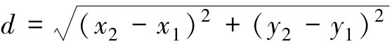表示M1（x1，y1）与M2（x2，y2）的距离.
坐标平面上具有某种性质的点的集合，称为平面点集，记作
E={（x，y）|（x，y）具有某种性质}.
1. 邻域的概念
设P0（x0，y0）是xOy面上的一点，δ是一个正数，xOy面上所有与点P0的距离小于δ的点的集合，称为点P0的δ邻域，即
U（P0，δ）={P||P0P|<δ}，
或

这是一个以P0为圆心、δ为半径的圆的内部（见图6-1），所以P0又称为邻域的中心，δ叫作邻域的半径；同样可以定义平面上的去心邻域，即
图6-1
在讨论问题时，如果不强调邻域的半径，点P0的邻域可以简记为U（P0）.
2. 区域的概念
设D是平面上的点集，如果D中的点满足下面两个条件，则称D为开区域.
（1）对于D中的任意一点P，都能找到它的一个邻域（见图6-2），使得邻域能够包含在点集D中（这样的点P称为点集的内点）.
图6-2
（2）对于D中的任意两点，都能用包含在D中的折线连接起来，即折线上的点都在D中（见图6-3）.
开区域简称区域.

图6-3
设D是平面区域，P是平面上的任意一点．若P的任何一个邻域中，既含有D中的点，也含有不是D中的点，那么P称为D的边界点（见图6-4），所有边界点的集合称为D的边界．开区域和它的边界一起构成的集合，称为闭区域.
图6-4
开区域（或闭区域）分为有界区域和无界区域．一个区域D如果能够包含在一个以原点为中心的圆内，则称为有界区域，否则就是无界区域.
如图6-5所示，平面点集D={（x，y）|1≤x2+y2≤4}是一个有界的闭区域，边界是两个圆所对应的曲线：{（x，y）|x2+y2=1}∪{（x，y）|x2+y2=4}，边界曲线属于闭区域D.
图6-5
图6-6所表示的平面点集D={（x，y）|x+y>0}是无界（开）区域．边界是直线y=－x，边界不属于区域D.

图6-6
二、二元函数的概念
和一元函数一样，二元函数也是从实际问题中抽象出来的一个数学概念．例如，圆柱体的体积V和它的高h及底面半径r之间有如下的关系：
V=πr2h，
当r、h在集合{（r，h）|r>0，h>0}内取值时，则有唯一的V=πr2h与之对应.
又例如，一定量的理想气体的压强P、体积V和温度T之间有如下的关系：
其中R是常数．当T、V在集合{（T，V）|T>T0，V>0}内取值时，有唯一的与之对应.
上面的两个实际问题说明，在一定的条件下，当两个变量在允许的范围内取值时，另一个变量通过对应的法则有唯一的值与之对应．由此我们得到了以下的二元函数的定义.
定义1 设D是平面上的一个非空点集，如果对于D内的任一点（x，y），按照某种法则f，都有唯一确定的实数z与之对应，则称f是D上的二元函数，它在（x，y）处的函数值记为f（x，y），即z=f（x，y），其中x、y称为自变量，z称为因变量．点集D称为该函数的定义域，数集{z|z=f（x，y），（x，y）∈D}称为该函数的值域.
按照定义，在关系式V=πr2h中，V是h、r的二元函数，集合{（r，h）|r>0，h>0}称为该二元函数的定义域；在关系式中，P是T、V的二元函数，集合{（T，V）|T>T0，V>0}称为该二元函数的定义域.
与一元函数一样，二元函数的定义域也可作以下约定：在一般讨论用算式表达的二元函数时，其定义域就是使这个算式有意义的自变量的变化范围．如二元函数z=f（x，y），其定义域就是使f（x，y）有确定值z的自变量x、y的变化范围所确定的点集.
比如，函数z=ln（x+y）的定义域是满足不等式x+y>0的点的全体，它是一个点集：D={（x，y）|x+y>0}.
函数z=arcsin（x2+y2）的定义域为D={（x，y）|x2+y2≤1}.
例1 求二元函数f（x，y）=的定义域.
解 根据二次根式的定义，x、y必须满足不等式3－x2－y2≥0，即
x2+y2≤3.
所求的函数f（x，y）=的定义域为平面点集：
D={（x，y）|x2+y2≤3}.
这是平面上圆心在原点、半径为 的圆.
的圆.
例2 求函数z=ln（x2+y2－2x）+ln（4－x2－y2）的定义域.
解 由对数的定义域可知，x、y必须同时满足 解这个方程组，即得2x<x2+y2<4，从而函数的定义域为
解这个方程组，即得2x<x2+y2<4，从而函数的定义域为
D={（x，y）|2x<x2+y2<4}.
例3 已知函数f（x+y，x－y）= ，求f（x，y）的表达式，并求f（2，1）的值.
，求f（x，y）的表达式，并求f（2，1）的值.
解 设u=x+y，v=x－y，则
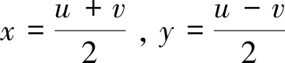
故得
即有

从而
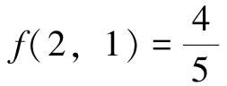
设函数z=f（x，y）的定义域为D，对于任意取定的点P（x，y）∈D，对应的函数值为z=f（x，y），这样，以x为横坐标、y为纵坐标、z为竖坐标在空间就确定一点M（x，y，z），当x取遍D上一切点时，得到一个空间点集{（x，y，z）|z=f（x，y），（x，y）∈D}，这个点集称为二元函数的图形.
二元函数的图形是一张曲面，例如z=3x2+4y2就是一个椭圆抛物面，z=x2+y2的图形为旋转抛物面， 的图形为上半球面等.
的图形为上半球面等.
类似地，可定义三元及三元以上函数．当n≥2时，n元函数统称为多元函数.
三、二元函数的极限
我们先回顾一下一元函数极限的定义.
设函数f（x）在点a的某一个去心邻域内（即点a可以除外）有定义，若∀ε>0，∃δ>0，当0<|x－a|<δ时，恒有|f（x）－A|<ε，则.
这里a是数轴上的定点，x是数轴上的动点，|x－a|表示点x与a的距离，而0<|x－a|<δ表示{x|x∈（a－δ，a）∪（a，a+δ）}.
类似地，可建立二元函数的极限.
定义2 设函数z=f（x，y）的定义域为D，P0（x0，y0）是xOy平面内的定点（见图6-7）．若存在常数A，∀ε>0，∃δ>0，当点P（x，y）∈D∩（P0，δ）时，恒有
|f（P）－A|=|f（x，y）－A|<ε，
图6-7
则称常数A为二元函数f（x，y）当（x，y）→（x0，y0）时的极限，记作
或
f（x，y）→A，（x，y）→（x0，y0）.
也可记作
 =A或f（P）→A，P→P0.
=A或f（P）→A，P→P0.
例4 证明 ．
．
证 ∀ε>0，要使
取δ=ε，当 时，恒有|f（x，y）－A|<ε，故.
时，恒有|f（x，y）－A|<ε，故.
注 只有当P（x，y）以任何的方式趋于点P0（x0，y0）时，对应的函数值z=f（x，y）趋近于确定的常数A，才能说f（x，y）有极限，或者说极限的存在与自变量趋近的路径无关．反之，如果点P（x，y）沿着两条不同的路径趋于P0（x0，y0）时，函数值趋于不同的常数，那么函数的极限肯定不存在.

二重极限存在与不存在的举例
例5 证明不存在.
证 取y=kx（k为常数），则
易见函数极限的值随k的变化而变化．当k=0时，极限值为0；当k=1时极限值为 ，故极限不存在.
，故极限不存在.
二元函数的极限与一元函数的极限具有类似的性质和运算法则，在此不再详述．为了区别于一元函数的极限，我们称二元函数的极限为二重极限.
例6 求极限
解 令u=x2+y2，当x→0，y→0时，u→0，则二元函数的二重极限就转化为一元函数的极限问题.
这里利用了一元函数极限中，无穷小和有界量的乘积是无穷小的性质.
例7 求极限.
解
这里利用了一元函数极限中，等价无穷小替换的性质.
四、二元函数的连续性
定义3 设二元函数z=f（x，y）在点（x0，y0）的某一邻域内有定义，（x，y）是邻域内任意一点，如果
则称z=f（x，y）在点（x0，y0）处连续．若不然，就称函数z=f（x，y）在点（x0，y0）处不连续，此时（x0，y0）称为函数z=f（x，y）的间断点.
设函数f（x，y）在D上有定义，且在D上每一点f（x，y）都连续，那么就称函数f（x，y）在D上连续，或者称f（x，y）是D上的连续函数.
一元函数中关于极限的运算法则，对于多元函数仍然适用．根据一元函数极限的运算法则，则有以下结论.
（1）多元连续函数的和、差、积仍为连续函数.
（2）多元连续函数的商在分母不为零时仍为连续函数.
（3）多元连续函数的复合函数仍为连续函数.
由常数及具有不同自变量的一元基本初等函数经过有限次的四则运算和复合步骤而得到的可用一个式子表示的函数称为多元初等函数.
一切多元初等函数在其定义区域内是连续的．所谓定义区域是指包含在定义域内的区域或闭区域.
一般地，求时，如果f（P）是初等函数，且P0是f（P）的定义域的内点，则f（P）在P0处连续，于是
例8 求.
解 因初等函数f（x，y）=在（0，1）处连续，故

例9 求.
解  .
.
例10 求.
解 当x→0，y→0时，x2+y2→0，故
另外，对于函数
由例5可知，当x→0，y→0时，f（x，y）的极限不存在，故（0，0）是f（x，y）的间断点.
又如f（x，y）= 是初等函数，它在直线y=－x上是没有定义的，所以函数f（x，y）的间断点是平面上的点集{（x，y）|x+y=0}.
是初等函数，它在直线y=－x上是没有定义的，所以函数f（x，y）的间断点是平面上的点集{（x，y）|x+y=0}.
与一元连续函数的性质相类似，在有界闭区域上连续的多元函数具有如下性质.
性质1（有界性与最大值最小值定理） 若函数f（P）在有界闭区域D上连续，则f（P）在D上必有界，且能取得最大值和最小值.
性质2（介值定理） 若函数f（P）在有界闭区域D上连续，则f（P）必在D上取得介于最大值和最小值之间的任何值.
习题6-1
1. 填空题.
（1）设二元函数z=|xy|+ ，则=______.
，则=______.
（2）设二元函数f（x，y）= ，则=；f（x+y，1）=.
，则=；f（x+y，1）=.
（3）设二元函数f（x，y）=x2+y2，则f（，x+y）=______.
（4）设f（x+y，x－y）=x2－y2，则f（x，y）=______.
（5）设 =______.
=______.
（6）二元函数的定义域是______.
2. 求下列函数的定义域.
（1）z=ln（xy）；
（2）z=arcsin（x+y）；
（3）z=arcsin（1－y）+ln（x－y）；
（4） ；
；
（5） ；
；
（6） ；
；
（7）；
（8）.
3. 求下列函数的极限.
（1）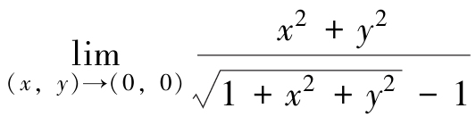；
（2）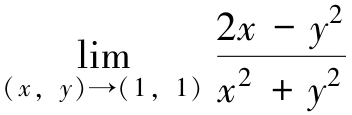；
（3） ；
；
（4） ；
；
（5） ；
；
（6） .
.
4. 证明下列极限不存在.
（1）；
（2） .
.
5. 讨论下列函数在点（0，0）处的连续性.
（1）
（2）
6. 判定下列函数在何处间断.
（1） ；
；
（2）；
（3） ；
；
（4）.
第二节 多元函数的偏导数与全微分
［课前导读］
在一元函数y=f（x）中，如果自变量x产生变化（由x0变为x0+Δx），那么函数也会相应地产生一个增量Δy=f（x0+Δx）－f（x0）．而函数关于自变量的变化率，即称为函数y对自变量x的导数．在二元函数f（x，y）中，当一个自变量在变化（例如自变量x由x0变为x0+Δx），而另一个自变量不变化（自变量y保持定值y0），则函数关于这个自变量的变化率叫作这个二元函数对这个自变量的偏导数.
对于一元函数来说，若Δy=AΔx+o（Δx），A为常数，则称f（x）在x处可微，其中AΔx称为微分，记作dy=AΔx．f（x）在x处可微的充要条件是f（x）在该点可导，且
dy=f′（x）Δx=f′（x）dx，
那么对于二元函数来说，如何推广微分定义，对应的微分和导数是否能延续这样的关系，这都是这一节我们要解决的问题.
一、偏导数
一元函数从变化率的研究引入了导数的概念：
它的几何意义是曲线y=f（x）在点（x0，f（x0））处切线的斜率为k=tanα=f′（x0）.
多元函数的自变量不止一个，因变量与自变量的关系要比一元函数复杂得多，因此我们首先考虑多元函数中关于其中一个变量的变化率．以二元函数z=f（x，y）为例，若只有自变量x变化，而自变量y不变（暂作常量），这时就可看作为x的一元函数了．比如，理想气态方程 ，其中T、V是两个变量，k是常量（比例系数）．有时需考虑在等温条件下（T不变）压缩气体压强P关于体积V的变化率，或在等容条件下（V不变）压缩气体压强P关于温度T的变化率，这些都是偏导数问题.
，其中T、V是两个变量，k是常量（比例系数）．有时需考虑在等温条件下（T不变）压缩气体压强P关于体积V的变化率，或在等容条件下（V不变）压缩气体压强P关于温度T的变化率，这些都是偏导数问题.
1. 偏导数的定义及其计算
定义1 设函数z=f（x，y）在点（x0，y0）的某一邻域内有定义，当y固定在y0，而x在x0处有增量Δx时，相应的函数有增量
f（x0+Δx，y0）－f（x0，y0）.
如果存在，则称此极限为函数z=f（x，y）在点（x0，y0）处对x的偏导数，记为
例如，
类似地，函数z=f（x，y）在点（x0，y0）处对y的偏导数为
记为
二元函数偏导数的定义可以类推到三元及三元以上的函数.
如果函数z=f（x，y）在区域D内每一点处对x的偏导数都存在，那么这个偏导数是x、y的二元函数，那么称为函数z=f（x，y）对自变量x的偏导函数，简称为偏导数，记作

同样，函数z=f（x，y）对自变量y的偏导数记作

上述定义表明，在求多元函数对某个自变量的偏导数时，只需把其余自变量看作常量，然后直接利用一元函数的求导公式及复合函数求导法则来计算.
例1 设函数z=x3+2x2y3+yex，求 .
.
解 把y看作常量，函数z对自变量x求导得到
把x看作常量，函数z对自变量y求导得到
例2 求z=f（x，y）=x2+3xy+y2在点（1，2）处的偏导数.
解 把y看作常量，函数z对自变量x求导得到
fx（x，y）=2x+3y，
把x看作常量，函数z对自变量y求导得到
fy（x，y）=3x+2y，
把x=1，y=2代入所求偏导数，则得到该点的偏导数为
fx（1，2）=2×1+3×2=8，
fy（1，2）=3×1+2×2=7.
例3 求函数z=xy的两个偏导数 .
.
解 把y看成常量，则xy是x的幂函数，由一元幂函数的求导公式，得

把x看成常量，则xy是y的指数函数，由一元指数函数的求导公式，得

例4 设f（x，y）=（x－1）g（y）+（y－1）h（x），求fx（1，1）.
解 由偏导数的定义可知，
注 本题也可用以下方法处理.
先写出f（x，1）=（x－1）g（1）+（1－1）h（x）=（x－1）g（1）；
再利用一元函数求导公式，函数对x求导，得fx（x，1）=g（1）；
最后代入x=1得fx（1，1）=g（1）.
例5 求三元函数u=sin（x+y2－ez）的偏导数.
解 把y和z看作常量，函数u对自变量x求导得

把x和z看作常量，函数u对自变量y求导得

把x和y看作常量，函数u对自变量z求导得

例6 已知一定量的理想气体的状态方程为PV=RT（R为常数），证明：

解 因为，把T看作常量，函数P对自变量V求导，得

同理， ，把P看作常量，函数V对自变量T求导，得
，把P看作常量，函数V对自变量T求导，得
，把V看作常量，函数T对自变量P求导，得

所以
关于多元函数的偏导数，补充以下几点说明.
（1）对一元函数而言，导数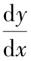可看作函数的微分dy与自变量的微分dx的商．但偏导数的记号是一个整体，是不可分割的.
（2）与一元函数类似，对于分段函数在分段点的偏导数要利用偏导数的定义来求.
（3）在一元函数微分学中，我们知道，如果函数在某点存在导数，则它在该点必定连续．但对多元函数而言，即使函数在某点的各个偏导数都存在，也不能保证函数在该点连续.
例如，二元函数
在点（0，0）的偏导数为
但从上节例题已经知道这个函数在点（0，0）处不连续.
2. 偏导数的几何意义
设曲面的方程为z=f（x，y），M0（x0，y0，f（x0，y0））是该曲面上一点，过点M0作平面y=y0，截此曲面得一条曲线，其方程为
则偏导数fx（x0，y0）表示上述曲线在点M0处的切线M0Tx对x轴正向的斜率（见图6-8）．同理，偏导数fy（x0，y0）就是曲面被平面x=x0所截得的曲线在点M0处的切线M0Ty}对y轴正向的斜率（见图6-9）.
图6-8

图6-9

偏导数的几何意义
3. 高阶偏导数
设函数z=f（x，y）在区域D内具有偏导数

则在D内fx（x，y）和fy（x，y）都是x、y的函数．如果这两个函数关于自变量x，y的偏导数存在，则称它们是函数z=f（x，y）的二阶偏导数．按照对变量求导次序的不同，共有下列四个二阶偏导数：
其中第二、第三两个偏导数称为混合偏导数.
类似地，可以定义三阶、四阶及以上n阶偏导数．我们把二阶及二阶以上的偏导数统称为高阶偏导数.
例7 设z=4x3+3x2y－3xy2－x+y，求
解
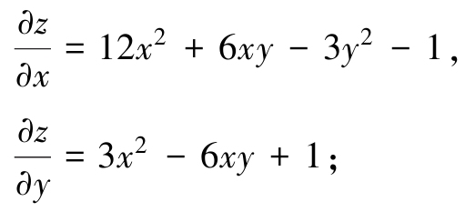
例8 求z=xln（x+y）的四个二阶偏导数.
解
例9 求函数z=xy的四个二阶偏导数.
解
例10 验证函数u（x，y）=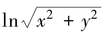满足方程
证 因为，
所以
从而
注 方程 称为拉普拉斯方程，它代表数学物理方程中的一类很重要的方程，若引入记号（算子），则拉普拉斯方程可写成Δu=0.
称为拉普拉斯方程，它代表数学物理方程中的一类很重要的方程，若引入记号（算子），则拉普拉斯方程可写成Δu=0.
上述算子也称为拉普拉斯算子.
我们在例7、例8、例9中都看到 ，这不是偶然的．事实上，有如下的定理.
，这不是偶然的．事实上，有如下的定理.
定理1 如果函数z=f（x，y）的两个二阶混合偏导数 在区域D内连续，则在该区域内有.
在区域D内连续，则在该区域内有.
证明从略.
这就是说，连续的二阶混合偏导数与求导次序无关.
二、全微分
在实际问题中，经常遇到需考虑用Δx、Δy的线性函数来代替全增量Δz的问题，即多元函数的线性逼近.
对于二元函数z=f（x，y），它对某个自变量的偏导数表示当其中一个自变量固定时，因变量对另一个自变量的变化率．相应地，我们可以定义二元函数的偏增量和偏微分.
Δxz=f（x+Δx，y）－f（x，y）和Δyz=f（x，y+Δy）－f（x，y）分别称为二元函数对变量x与y的偏增量．固定自变量y，若Δxz=f（x+Δx，y）－f（x，y）=AΔx+o（Δx），当fx（x，y）存在时，则有A=fx（x，y），fx（x，y）Δx称为二元函数z=f（x，y）关于x的偏微分．同理，可以定义关于y的偏微分fy（x，y）Δy.
根据一元函数微分学中增量与微分的关系，可得
f（x+Δx，y）－f（x，y）≈fx（x，y）Δx，
f（x，y+Δy）－f（x，y）≈fy（x，y）Δy.
在实际问题中，有时需要研究多元函数中各个自变量都取得增量时因变量所获得的增量，即所谓全增量的问题．下面我们看一个具体的问题.
设矩形的长和宽分别为x和y，则此矩形的面积S=xy．若边长x有增量Δx，边长y有增量Δy时（见图6-10），则面积S相应的增量为
ΔS=（x+Δx）（y+Δy）－xy=yΔx+xΔy+Δx・Δy.

图6-10
可见，ΔS包含两部分：第一部分是yΔx+xΔy，它是关于Δx和Δy的一次式；第二部分是Δx・Δy，它是关于 的高阶无穷小，即
的高阶无穷小，即
于是ΔS=yΔx+xΔy+o（ρ）.
一般地，如果函数z=f（x，y）在点P（x，y）的某邻域内有定义，并设P′（x+Δx，y+Δy）为这邻域内的任意一点，则称
f（x+Δx，y+Δy）－f（x，y）
为函数在点P对应于自变量增量Δx、Δy的全增量，记为Δz，即
Δz=f（x+Δx，y+Δy）－f（x，y）.
一般来说，计算全增量比较复杂．与一元函数的情形类似，我们也希望利用关于自变量增量Δx、Δy的线性函数来近似地代替函数的全增量Δz，由此引入关于二元函数全微分的定义.

全微分的几何意义
1. 全微分的定义
定义2 如果函数z=f（x，y）在点（x，y）的全增量
Δz=f（x+Δx，y+Δy）－f（x，y）
可以表示为
Δz=AΔx+BΔy+o（ρ），
其中A、B不依赖于Δx、Δy，而仅与x、y有关， ，则称函数z=f（x，y）在点（x，y）可微分，AΔx+BΔy称为函数z=f（x，y）在点（x，y）的全微分，记为dz，即
，则称函数z=f（x，y）在点（x，y）可微分，AΔx+BΔy称为函数z=f（x，y）在点（x，y）的全微分，记为dz，即
dz=AΔx+BΔy.
若函数在区域D内各点处可微分，则称这函数在D内可微分.
由全微分的定义可知，矩形面积S=xy在（x，y）处的全微分dS=yΔx+xΔy.
2. 函数可微的条件
在学习一元函数的微分时，我们得到这样的结论：如果函数在某一点可微，则在该点处必连续，且在该点处可导.
对二元函数也有类似的性质，即有
定理2（必要条件） 如果函数z=f（x，y）在点（x，y）处可微分，则
（1）函数z=f（x，y）在点（x，y）连续；
（2）函数z=f（x，y）的两个偏导数 都存在，且z=f（x，y）在点（x，y）处的全微分为
都存在，且z=f（x，y）在点（x，y）处的全微分为
证 （1）设函数z=f（x，y）在点（x，y）处可微分，则有
Δz=AΔx+BΔy+o（ρ），
于是
因此函数z=f（x，y）在点（x，y）处连续.
（2）设函数z=f（x，y）在点（x，y）处可微分，则有
f（x+Δx，y+Δy）－f（x，y）=AΔx+BΔy+o（ρ）.
在上式中令Δy=0，即
f（x+Δx，y）－f（x，y）=AΔx+o（|Δx|），
两边同除以Δx，再令Δx→0，于是有
所以存在，且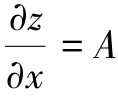.
同理可证 存在，且
存在，且 .
.
因此.
但是，两个偏导数 存在，并不能保证函数z=f（x，y）在（x，y）处可微分．例如，在前面我们已经求得，函数
存在，并不能保证函数z=f（x，y）在（x，y）处可微分．例如，在前面我们已经求得，函数
在（0，0）处的两个偏导数fx（0，0）和fy（0，0）存在，而它在点（0，0）处不连续，所以在点（0，0）处不可微.
我们知道，一元函数在某点可导是在该点可微的充分必要条件．但对于多元函数则不然．二元函数的各偏导数存在只是全微分存在的必要条件而不是充分条件.
由此可见，对于多元函数而言，偏导数存在并不一定可微分．因为函数的偏导数仅描述了函数在一点处沿坐标轴的变化率，而全微分描述了函数沿各个方向的变化情况．但如果对偏导数再加些条件，就可以保证函数的可微性.
定理3（充分条件） 如果函数z=f（x，y）的偏导数 在点（x，y）存在且连续，则函数在该点处可微分.
在点（x，y）存在且连续，则函数在该点处可微分.
证明从略.
3. 全微分的计算
习惯上，常将自变量的增量Δx、Δy分别记为dx、dy，并分别称为自变量x，y的微分．这样，函数z=f（x，y）的全微分就表示为

上述关于二元函数全微分的必要条件和充分条件，可以完全类似地推广到三元及三元以上的多元函数中去．例如，三元函数u=f（x，y，z）的全微分可表示为

例11 求函数z=4xy3+5x2y6的全微分.
解 因为，且连续，所以
dz=（4y3+10xy6）dx+（12xy2+30x2y5）dy.
例12 计算函数z=xy在点（2，1）处的全微分.
解 因为fx（x，y）=yxy－1，fy（x，y）=xylnx，所以
fx（2，1）=1，fy（2，1）=2ln2，
从而所求全微分为
dz=dx+2ln2dy.
例13 求函数u=x+sin +eyz的全微分.
+eyz的全微分.
解 由于
三个偏导数均连续，故所求全微分为
例14 求函数u=xyz的偏导数和全微分.
解
*4. 全微分在近似计算中的应用
设二元函数z=f（x，y）在点P（x，y）的两个偏导数fx（x，y）、fy（x，y）连续，且|Δx|、|Δy|都较小时，则根据全微分定义，有
Δz≈dz，
即
Δz≈fx（x，y）Δx+fy（x，y）Δy.
由Δz=f（x+Δx，y+Δy）－f（x，y），即可得到二元函数的全微分近似计算公式：
f（x+Δx，y+Δy）≈f（x，y）+fx（x，y）Δx+fy（x，y）Δy.
例15 计算（1.04）2.02的近似值.
解 设函数f（x，y）=xy，x=1，y=2，Δx=0.04，Δy=0.02.
f（1，2）=1，fx（x，y）=yxy－1，fy（x，y）=xylnx，fx（1，2）=2，fy（1，2）=0，由二元函数全微分近似计算公式得
（1.04）2.02≈1+2×0.04+0×0.02=1.08.
例16 当x、y的绝对值很小时，推出函数（1+x）m（1+y）n的近似公式.
解 取f（x，y）=xmyn，（x0，y0）=（1，1），则由近似公式
f（x0+Δx，y0+Δy）≈f（x0，y0）+fx（x0，y0）Δx+fy（x0，y0）Δy
得 （1+Δx）m（1+Δy）n≈1+mΔx+nΔy，
因此当x、y的绝对值很小时，有
（1+x）m（1+y）n≈1+mx+ny.
例17 测得矩形盒的边长为75cm、60cm以及40cm，且可能的最大测量误差为0.2cm．试用全微分估计利用这些测量值计算盒子体积时可能带来的最大误差.
解 以x、y、z为边长的矩形盒的体积为V=xyz，所以
由于已知|Δx|≤0.2，|Δy|≤0.2，|Δz|≤0.2，为了求体积的最大误差，取dx=dy=dz=0.2，再结合x=75，y=60，z=40，得
ΔV≈dV=60×40×0.2+75×40×0.2+75×60×0.2=1980，
即每边仅0.2cm的误差可以导致体积的计算误差最大达到1980cm3.
习题6-2
1. 选择题.
（1）以下二元函数的性质中，（ ）是其他的充分条件.
A. 连续
B. 偏导数存在
C. 可微
D. 偏导数连续
（2）若函数z=f（x，y）在点P0（x0，y0）处两个偏导数存在，则在P0处（ ）.
A. 连续
B. 可微
C. 不一定连续
D. 一定不连续
（3）设z=xy，则=（ ）.
A. 1
B. e
C. 0
D. 
（4）设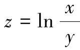，则=（ ）.
A. 
B.
C.
D. 
（5）设z=exy，则dz=（ ）.
A. exydx
B. （xdy+ydx）exy
C. xdy+ydx
D. （x+y）exy
2. 填空题.
（1）设z=arctan（xy），则 =_______；
=_______；
（2）设 ，则fy（1，0）=_______；
，则fy（1，0）=_______；
（3）函数 在点（1，1）的偏导数为_______；
在点（1，1）的偏导数为_______；
（4）设f（x，y）=x+y－ ，则fx（3，4）=_______；
，则fx（3，4）=_______；
（5）设z=f2（xy），其中f可微，则 =_______；
=_______；
（6）设u=ex+xy，则全微分du=_______；
（7）设 ，则dz|（1，1）=_______；
，则dz|（1，1）=_______；
（8）设，则du|（1，1，1）=_______.
3. 计算下列函数的偏导数.
（1）z=cos（xy2）；
（2）z=ln（x2+y）；
（3）z=ex+y+yx2；
（4）；
（5） ；
；
（6）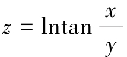.
4. 求下列函数在指定点的偏导数.
（1）z=（2y+1）x，求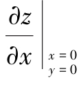；
（2） ，求fy（3，4）；
，求fy（3，4）；
（3）f（x，y）=x+（y－1）arcsinx ，求fx（x，1）；
，求fx（x，1）；
（4）f（x，y）=x2+ln（y2+1）arctanxy+1，求fx（x，0）.
5. 设，求证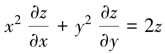.
6. 求曲线 ，在点（2，4，5）处的切线关于x轴的斜率.
，在点（2，4，5）处的切线关于x轴的斜率.
7. 求下列三元函数的偏导数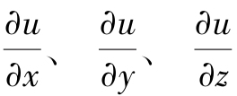.
（1）u=xyz；
（2） .
.
8. 求下列函数z=f（x，y）的二阶偏导数 .
.
（1）z=2x2+3xy－y2；
（2）z=eaxcosby；
（3）z=cos2（2x+3y）；
（4）z=ln（x+y2）；
（5）z=arcsin（xy）；
（6）z=xsin（x+y）+ycos（x+y）.
9. 求函数z=ln（1+x2+y2）当x=1，y=2时的全微分.
10. 求函数 ，当x=2，y=1，Δx=0.1，Δy=－0.2时的全增量和全微分.
，当x=2，y=1，Δx=0.1，Δy=－0.2时的全增量和全微分.
11. 求下列函数的全微分.
（1） ；
；
（2）z=ln（x2+y2）；
（3）；
（4）u=x2yz+cos2y.
12. 设，求dz|（1，1）.
13. 设z=xln（xy），求 .
.
14. 证明函数 满足拉普拉斯方程：
满足拉普拉斯方程：

其中 .
.
*15. 求的近似值.
*16. 当x、y的绝对值很小时，推出函数arctan 的近似公式.
的近似公式.
*17. 已知边长为x=6m与y=8m的矩形，如果x边增加5cm而y减少10cm，问这个矩形的对角线的近似变化怎样？
*18. 设函数讨论该函数在（0，0）点的连续性、可导性与可微性.
*19. 设试求fxy（0，0）及fyx（0，0）.
第三节 复合求导、隐函数求导及方向导数
［课前导读］
设u=φ（x）在点x可导，而y=f（u）在对应点u处可导，则复合函数y=f［φ（x）］在点x处可导，且有 ．这就是一元函数的复合求导的“链式法则”，函数之间的关系可以用这样的结构图来表示：y→u→x.
．这就是一元函数的复合求导的“链式法则”，函数之间的关系可以用这样的结构图来表示：y→u→x.
这一法则可以推广到多元复合函数的情形．由于多元函数的构成比较复杂，所以一元函数的“链式图”就转化为多元函数的“树图”.
例如，u=f（x，y，z）用结构图来表示就是

而z=f（x，y）与y=φ（x）复合而成的函数z=f（x，φ（x））的结构图为

一、多元函数复合求导
1. 复合函数的中间变量为一元函数的情形
定理1 设u=u（t），v=v（t）均在t处可导，函数z=f（u，v）在对应点（u，v）处有连续的偏导数，则它们构成的复合函数z=f［u（t），v（t）］在t处可导，且有导数公式
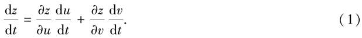
公式（1）中的导数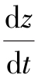称为全导数.
对于此定理我们不予证明，只用结构图来做一下说明.
公式（1）的右边是偏导数与导数乘积的和式，它与函数自身的结构有密切的关系.z是u、v的二元函数，而u和v都是t的一元函数，我们用函数的结构图来表示，就是
从结构图中可以看出，z通过中间变量u和v到达t有两条“路径”，而公式（1）右侧恰好有两式相加，而每条“路径”上都是两项的乘积，是对应的函数的偏导数和导数的乘积.
这种方法可以推广到三元函数的情形，例如，设u=u（t），v=v（t），w=w（t）均在t处可导，z=f（u，v，w）在对应点处具有连续的偏导数，求复合函数z=f［u（t），v（t），w（t）］的全导数.
函数的结构图是

从函数的结构图中可以看出，由z经中间变量u、v、w到达t有三条“路径”，因此公式中应该是三项之和，所以它的全导数为

例1 设z=uv，而u=et，v=cost，求导数 .
.
解 由公式（1）知
注 我们也可以把u=et，v=cost表达式代入到z=uv中，即z=etcost，然后直接求一元函数的导数.
例2 设z=ln（u+v）+et，而u=2t，v=t2，求导数.
解 函数的结构图为
因此
注 解中的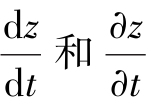的含义是不一样的.
 表示复合以后的一元函数z=f［u（t），v（t），w（t）］对t的全导数，而
表示复合以后的一元函数z=f［u（t），v（t），w（t）］对t的全导数，而 表示复合前的三元函数z=ln（u+v）+et对第三个自变量t的偏导数.
表示复合前的三元函数z=ln（u+v）+et对第三个自变量t的偏导数.
2. 复合函数的中间变量为多元函数的情形
定理2 设u=u（x，y），v=v（x，y）在点（x，y）处都具有偏导数 ，函数z=f（u，v）在对应点（u，v）具有连续的偏导数，则复合函数z=f［u（x，y），v（x，y）］在（x，y）处的两个偏导数存在，并有求导公式：
，函数z=f（u，v）在对应点（u，v）具有连续的偏导数，则复合函数z=f［u（x，y），v（x，y）］在（x，y）处的两个偏导数存在，并有求导公式：
定理证明从略.
定理2中的复合函数的结构图是
我们可以借助函数结构图，利用前面分析的方法与结论，直接写出式（2）和式（3）的求导公式.
例3 设z=eusinv，而u=xy，v=x+y，求.
解 由式（2）和式（3）可得
例4 求z=（3x2+y2）4x+2y的两个偏导数 .
.
解 设u=3x2+y2，v=4x+2y，则z=uv.
于是
则

这种类型的题目也可以用全微分的方法来解决，感兴趣的读者可以试一下.
3. 复合函数的中间变量既有一元函数也有多元函数的情形
这种情形可以视为定理2的特例，我们仅以一种情况为例，其他的类似可得.
定理3 如果函数u=u（x，y）在点（x，y）具有对x和y的偏导数，函数v=v（y）在点y可导，函数z=f（u，v）在对应点（u，v）具有连续偏导数，则复合函数z=f［u（x，y），v（y）］在对应点（x，y）的两个偏导数存在，且有
定理证明从略.
该复合函数的结构图为
例5 设函数z=eu2+v2，而u=x2siny，v=cosy，求
解 由式（4）和式（5）可知，
例6 设z=f（x，y，u）=（x－y）u，u=xy，求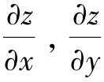.
解 函数的结构图为

其中x、y既是复合函数的中间变量，又是自变量．则
注 等号两边都有，但这两个符号的含义是不一样的，左边的是二元函数z=（x－y）xy对x的偏导数，右边的是三元函数z=f（x，y，u）=（x－y）u对x的偏导数．为了表示区别，等号右边的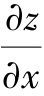常写作 ．同理，等号两边的的含义也是不一样的，等号右边的
．同理，等号两边的的含义也是不一样的，等号右边的 也常写作
也常写作 .
.
例7 设z=f（sinx，x2－y2），f具有一阶连续的偏导数，求.
解 设u=sinx，v=x2－y2，则函数z=f（sinx，x2－y2）是由函数z=f（u，v），u=sinx，v=x2－y2复合而成．由函数的结构图
可得
注 有时，为表达简便起见，引入以下记号：
这里下标1表示对第一个变量求偏导数，下标2表示对第二个变量求偏导数，利用这样的记号，例7的结果可以表示为
同理，也可以引入 等记号.
等记号.
例8 （1）设u=f（x+z，xyz），其中f具有二阶偏导数，求；
（2）设u=f（xy，xyz），其中f具有二阶连续偏导数，求.
解 （1）
注 本题条件中并没有二阶偏导数连续，因此未必相等，因此不要将其合并.
（2）
注 本题条件中有二阶偏导数连续，因此 ，因此需要将其合并.
，因此需要将其合并.
例9 设函数u=f（x，y）具有二阶连续偏导数，将下列表达式转换为极坐标的形式.
（1） ；
；
（2）.
解 （1）直角坐标系与极坐标系的关系为
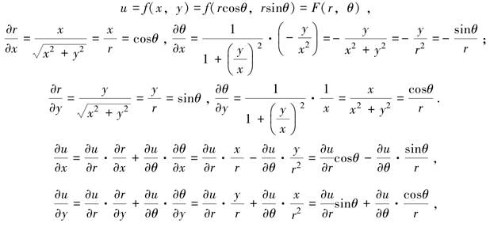
因此
（2）
同理，
因此，
注 也可将r、θ看作是自变量，x、y看作是中间变量.
以上两式联立，解出
4. 全微分形式的不变性
设函数z=f（u，v）可微，则有
如果u=u（x，y），v=v（x，y）可微，则z=f（u（x，y），v（x，y））= （x，y）也可微，从而
（x，y）也可微，从而

可以看出，无论z是自变量u、v的函数，还是中间变量u、v的函数，它的全微分形式是一样的，这个性质就叫作全微分形式的不变性.
例10 设z=（x－y）x2+y2，求.
解
代入并归并含dx及dy的项，得
二、隐函数的求导公式
在一元微分学中，我们曾引入了隐函数的概念，并介绍了不经过显化而直接由方程
F（x，y）=0
来求它所确定的隐函数y=f（x）的导数的方法.
那时，实际上假定方程F（x，y）=0能确定y是x的函数y=f（x），函数y=f（x）具有导数y′．但是事实上并不是任何一个方程F（x，y）=0都能确定y是x的函数，且使y=f（x）可导．那么，在什么条件下，从方程F（x，y）=0中可以确定y是x的函数？这个函数是否可导？如何来求该导数？现在我们来回答这些问题.
1. 一个方程的情形
定理4（隐函数存在定理1） 设函数F（x，y）在点P（x0，y0）的某一邻域内具有连续的偏导数，且
Fy（x0，y0）≠0，F（x0，y0）=0，
则方程F（x，y）=0在点P（x0，y0）的某一邻域内恒能唯一确定一个连续且具有连续导数的函数y=f（x），它满足y0=f（x0），并有
本定理不作严格证明，仅就结论作以下推导.
方程F（x，y）=0在点P0（x0，y0）的某邻域内恒能唯一确定一个连续函数y=f（x），则将y=f（x）“代入”F（x，y）=0，使其成为恒等式：F（x，f（x））≡0.
等式左边的函数F（x，f（x））是一个复合函数，它的函数结构图为

求此方程的全导数 ，
，
由于Fy（x，y）连续，且Fy（x0，y0）≠0，因此存在P0（x0，y0）的一个邻域，在这个邻域内，Fy（x，y）≠0，于是得.
注 如果F（x，y）的二阶偏导数也连续，则可把上面等式两端看作x的复合函数而再次求导，得
例11 验证方程x2+y2－1=0在点（0，1）的某邻域内能唯一确定一个有连续导数，当x=0时y=1的隐函数y=f（x），并求这函数的一阶和二阶导数在x=0的值.
证 令F（x，y）=x2+y2－1，则
Fx=2x，Fy=2y，Fx（0，1）=0，Fy（0，1）=2≠0，
依定理4知方程x2+y2－1=0在点（0，1）的某邻域内能唯一确定一个有连续导数，当x=0时y=1的隐函数y=f（x），函数的一阶和二阶导数为

例12 求由方程xy－ex+ey=0所确定的隐函数y的导数.
解 令F（x，y）=xy－ex+ey，则
由原方程知x=0时，y=0，所以
例13 求由方程x－y－ey=0确定的隐函数的导数.
解 取F（x，y）=x－y－ey，则Fx=1，Fy=－1－ey≠0，因此
注 本题也可用复合函数求导的方法解.
在方程x－y－ey=0两端关于x求导，得
整理得
再在式（*）两端关于x求导，得
整理得
隐函数存在定理可以推广到三元以及三元以上的方程的情形.
定理5（隐函数存在定理2） 设函数F（x，y，z）在点P（x0，y0，z0）的某一邻域内有连续的偏导数，且
F（x0，y0，z0）=0，Fz（x0，y0，z0）≠0，
则方程F（x，y，z）=0在点P（x0，y0，z0）的某一邻域内恒能唯一确定一个连续且具有连续偏导数的函数z=f（x，y），它满足条件z0=f（x0，y0），并有
我们同样只给出定理最后结论的推导过程.
将z=f（x，y）代入方程F（x，y，z）=0，得恒等式
F（x，y，f（x，y））≡0，
等式左端是x，y的复合函数，恒等式两边分别对x，y求偏导数，由链式法则得

于是有

这就是隐函数z=f（x，y）的偏导数公式.
例14 求由方程 所确定的隐函数z=f（x，y）的偏导数.
所确定的隐函数z=f（x，y）的偏导数.
解 设，则F（x，y，z）=0，且
利用隐函数求导公式，当Fz≠0时得
其中z=z（x，y）由方程 确定.
确定.
注 本例也可以用其他方法求得两个一阶偏导数，例如：
在 两端关于x求导，得
两端关于x求导，得

整理得 ；在
；在 两端关于y求导，得
两端关于y求导，得 ，整理得
，整理得
或者在 两端微分，得，
两端微分，得，
整理得.
2. 方程组情形
定理6（隐函数存在定理3） 设函数F（x，y，u，v）、G（x，y，u，v）在点P0（x0，y0，u0，v0）的某个邻域内具有对各个变量的一阶连续偏导数，又F（x0，y0，u0，v0）=0，G（x0，y0，u0，v0）=0，且在点P0（x0，y0，u0，v0）处偏导数所组成的函数行列式（也称雅可比（Jacobi）行列式），则方程组 在点P0（x0，y0，u0，v0）的某个邻域内恒能唯一确定一组连续且具有连续偏导数的函数u=u（x，y）、v=v（x，y），它们满足条件u0=u（x0，y0），v0=v（x0，y0），并且
在点P0（x0，y0，u0，v0）的某个邻域内恒能唯一确定一组连续且具有连续偏导数的函数u=u（x，y）、v=v（x，y），它们满足条件u0=u（x0，y0），v0=v（x0，y0），并且
上述公式比较复杂，我们可以通过推导，注意它的形成过程，这样对记忆有帮助．比如可通过微分：
然后解出 .
.
也可将函数u=u（x，y），v=v（x，y）“代入”即得
方程组关于x求偏导，得

然后解出 .
.
同理，关于y求偏导，得
然后解出 .
.
例15 设u=u（x，y），v=v（x，y）由方程组 ，确定，求
，确定，求 .
.
这道题目可以用公式做，也可以用推导法解得，我们采取推导法.
解法一 在方程组 两端微分，得
两端微分，得

整理得
即.
解法二 在方程组 两端关于x求导，得
两端关于x求导，得

整理得
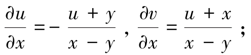
类似得
例16 设函数y=y（x），z=z（x）由方程组 确定，试求
确定，试求 .
.
解 将方程组两端微分，得

消去dz，得
同理，消去dy，得
例17 设函数x=x（u，v），y=y（u，v）在点（u，v）的某个邻域内连续且具有一阶连续偏导数，
解 设在点（x，y，u，v）的某个邻域内连续且具有一阶连续偏导数，且
故在点（x，y）的某个邻域内存在连续且具有一阶连续偏导数的反函数u=u（x，y），v=v（x，y）.
由得
因此
三、方向导数与梯度
偏导数反映的是函数沿坐标轴方向的变化率，但在实际问题中，只考虑沿坐标轴方向的变化率是不够的．例如，热空气要向冷的地方流动，气象学需要考虑大气温度、气压沿着某个方向的变化率，因此我们需要研究函数沿任意指定方向的变化率问题．方向导数就是反映函数在一点处沿一条特定的射线方向的变化率.
1. 方向导数
设函数z=f（x，y）在点M0（x0，y0）的某个邻域U（M0）内有定义，l是以M0（x0，y0）为始点的一条射线，它与x轴正向的夹角为α，M（x，y）为l上任一点．设|MM0|=ρ，故有x=x0+ρcosα，y=x0+ρsinα（见图6-11），若存在，则称此极限为函数z=f（x，y）在点M0（x0，y0）沿方向l的方向导数，记作 .
.
即

图6-11
从方向导数的定义可知，方向导数 就是函数f（x，y）在点M0（x0，y0）处沿方向l的变化率．偏导数存在只能推出沿x轴、y轴平行方向的方向导数存在，不能得到其他方向的方向导数存在．例如，若函数f（x，y）在点M0（x0，y0）的偏导数存在，el=i=（1，0），从而
就是函数f（x，y）在点M0（x0，y0）处沿方向l的变化率．偏导数存在只能推出沿x轴、y轴平行方向的方向导数存在，不能得到其他方向的方向导数存在．例如，若函数f（x，y）在点M0（x0，y0）的偏导数存在，el=i=（1，0），从而
又el=j=（0，1），从而
方向导数的几何意义
而方向导数存在不能得到偏导数存在，方向导数是单侧极限（ρ≥0），而的定义中要求x无论是从x0的左侧还是右侧趋于x0时极限存在且相等．例如， 在点（0，0）处沿方向el=i=（1，0）的方向导数为，而不存在.
在点（0，0）处沿方向el=i=（1，0）的方向导数为，而不存在.
 的情况类似.
的情况类似.
方向导数的存在与计算见以下定理.
定理7 若z=f（x，y）在点M0（x0，y0）处可微分，则z=f（x，y）在该点处沿任一方向l的方向导数均存在，且 ，其中α为方向l与x轴正向的夹角，cosα和sinα即为方向l的方向余弦，即el=（cosα，sinα）.
，其中α为方向l与x轴正向的夹角，cosα和sinα即为方向l的方向余弦，即el=（cosα，sinα）.
证 由z=f（x，y）在点M0（x0，y0）处可微知，Δz可表示成
其中 ．上式两端除以ρ，得
．上式两端除以ρ，得
令ρ→0，取极限，则得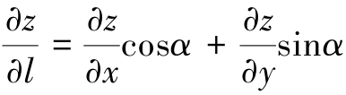.
注 根据定理7的条件可知，函数可微分则其方向导数存在，但方向导数存在，函数未必一定可微分.
例18 求函数z=x2－xy+y2在点M0（1，1）处沿与Ox轴正向成的方向l上的方向导数.
解  ，此两个偏导数在R2上连续，因此函数z可微分，因此
，此两个偏导数在R2上连续，因此函数z可微分，因此
例19 求函数z=xy+sin（x+2y）在点O（0，0）处沿方向l=（1，2）上的方向导数.
解 ，此两个偏导数在R2上连续，因此函数z可微分，与l同方向的单位向量为 ，因此
，因此
对于三元函数u=f（x，y，z），其在空间一点M0（x0，y0，z0）沿方向el=（cosα，cosβ，cosγ）的方向导数为
同样可以证明：若u=f（x，y，z）在点M0（x0，y0，z0）处可微，则u=f（x，y，z）在该点处沿任一方向l的方向导数均存在，且

其中cosα，cosβ，cosγ是方向l的方向余弦.
例20 求函数u=xy+yz+zx在点（1，1，2）处沿方向l上的方向导数，其中l的方向角分别为60°，45°，60°.
解 ，此三个偏导数在R3上连续，因此函数可微分，与l同方向的单位向量为el=（cos60°，cos45°，cos60°）=，因此
例21 求函数u=xsinyz在点（1，3，0）处沿方向l=（1，2，－1）上的方向导数.
解 ，此三个偏导数在R3上连续，因此函数可微分，与l同方向的单位向量为，因此
2. 梯度
方向导数反映了函数沿某射线方向的变化率．一般说来，一个二元函数在给定点处沿不同方向的方向导数是不一样的．在许多实际问题中需要讨论：函数沿哪个方向的方向导数为最大？为此，我们引进下面的梯度概念.
定义 设z=f（x，y）在平面区域D内具有一阶连续偏导数，则对于每一点（x，y）∈D， 称为z=f（x，y）在点（x，y）处的梯度，记作gradz，即gradz=.
称为z=f（x，y）在点（x，y）处的梯度，记作gradz，即gradz=.
若记 ，则gradz=z.
，则gradz=z.
由方向导数的公式，若z=f（x，y）具有一阶连续偏导数，则

其中el=（cosα，sinα），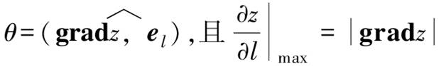.
由此可知，函数在一点的梯度是这样一个向量，它的方向是函数在这点的方向导数取得最大值的方向，且最大值等于梯度的模.
例22 求.
解 这里.
因为
所以
例23 设z=f（x，y）=xey.
（1）求出f在点P（2，0）处沿从P到 方向的变化率；
方向的变化率；
（2）f在点P（2，0）处沿什么方向具有最大的增长率，最大增长率为多少？
解 （1）设el是与 同方向的单位向量，则
同方向的单位向量，则 ，又
，又
f（x，y）=（ey，xey），
所以
（2）f在点P（2，0）处沿f（2，0）=（1，2）方向具有最大的增长率，最大增长率为|f（2，0）|= .
.
梯度的概念可以自然地推广到n元函数，以三元函数为例，设u=f（x，y，z）具有一阶连续偏导数，则梯度为
例24 求函数f（x，y，z）=（x－1）2+2（y+1）2+3（z－2）2－6在点（2，0，1）处沿向量（1，－2，－2）方向的方向导数.
解
因此
*3．数量场与向量场简介
所谓场，就是一种分布．气压、气温、电位、电场强度、流体密度、速度等由空间位置及时间所确定的物理量，它们在空间或在部分空间上的分布就称为场.
若形成场的物理量是数量，则称为数量场，即如果对于空间区域G内的任一点M，都有一个确定的数量函数f（M），则称在空间区域G内确定了一个数量场；一个数量场可用一个数量函数f（M）来确定，比如，大气温度的分布、流体密度的分布都形成数量场.
若形成场的物理量是向量，则称为向量场，即如果对于空间区域G内的任一点M，都有一个确定的向量值函数f（M），则称在空间区域G内确定了一个向量场；一个向量场可用一个向量值函数f（M）来确定，比如，流体流动的速度、电场强度的分布都形成向量场.
若向量场f（M）是某个数量函数f（M）的梯度场gradf（M），则称f（M）是向量场f（M）的一个势函数，并称向量场f（M）是一个势场.
注 任何一个向量场并不一定都是势场，因为它不一定是某个数量函数的梯度场.
例25 试求数量场所产生的梯度场，其中常数m>0，为原点O到点M（x，y，z）的距离.
解  ，同理，，故
，同理，，故

若用er表示与 同方向的单位向量，即
同方向的单位向量，即 ，则
，则
上式右端在力学上可解释为：位于原点O而质量为m的质点对位于点M而质量为1的质点的引力．这引力的大小与两质点的质量的乘积成正比，而与它们之间的距离平方成反比，这引力的方向由点M指向原点．因此数量场的势场即梯度场grad 称为引力场，而函数称为引力势.
称为引力场，而函数称为引力势.
习题6-3
1. 下列函数确定了z是t的函数，求.
（1）z=euv，u=sint，v=cost；
（2）设z=arcsin（x－y2），x=3t，y=4t2；
（3）z=ln（x+y）+arctant，x=2t，y=2t3；
（4）z=tan（3t+2x2－y2），.
2. 设z=u2lnv， ，v=2x－3y，求.
，v=2x－3y，求.
3. 设z=eusinv，而u=xy，v=x+y，求 .
.
4. 设z=x2y－xy2，x=rcosθ，y=rsinθ，求 .
.
5. 设u=sinx+F（siny－sinx），其中F是可微函数，证明：

6. 设f具有一阶连续偏导数，求下列函数的一阶偏导数.
（1）z=f（3x+2y，4x－3y）；
（2）z=f（x2－y2，exy）；
（3）z=f（ylnx，2x+3y）；
（4） ；
；
（5）z=f（x，x+y，x－y）；
（6）u=f（x，xy，xyz）.
7. 设w=f（x+xy+xyz），求.
8. 设z=f（exy，x2－y2），其中f（ξ，η）有连续的二阶偏导数，求 .
.
9. 设w=f（x+y+z，xyz），其中函数f有二阶连续偏导数，求.
10. 设z=f（x2+y2），其中函数f有二阶连续偏导数，求 .
.
11. 设z=f（u，x，y），而u=xey，其中函数f有二阶连续偏导数，求
12. 设z=eusinv，而u=xy，v=x+y，利用全微分形式不变性求zx和zy.
13. 利用一阶全微分形式的不变性求函数的偏导数.
14. 下列方程确定了y是x的函数，求 .
.
（1）siny+ex－xy2=0；
（2） ；
；
（3）y=1+xey；
（4）xy=yx.
15. 下列方程确定了z是x、y的函数，求
（1）ex－xyz=0；
（2）z3－3xyz=0；
（3）2xz+ln（xyz）=0；
（4）sin（x－2y+3z）=x+2y－3z；
（5）x2+y2+2x－2yz=ez；
（6）z3－3xyz=a3（a是常数）.
16. 设x2+y2+z2－4z=0，求 .
.
17. 设z=z（x，y）由方程x2+y2+z2=yf（z）所确定（其中yf′≠2z），试求.
18. 设x2+y2+z2=3xyz（*），f（x，y，z）=xy2z3.
（1）设z=z（x，y）是由方程（*）所确定的隐函数，求fx（1，1，1）；
（2）设y=y（x，z）是由方程（*）所确定的隐函数，求fx（1，1，1）.
19. 设方程x+y+z=ez确定了隐函数z=z（x，y），求 .
.
20. 设z=xy+u，u=φ（x，y），求 .
.
21. 求下列方程组确定的函数的导数或偏导数.
（1）
（2）
（3）
（4）
22. 设函数u=x2+yz，而z=z（x，y）是由方程z=f（x，y+z）确定的可微函数，其中f具有连续的偏导数且，求偏导数 .
.
23. 设y=f（x，t），其中t=t（x，y）由方程F（x，y，t）=0确定，求y对x的导数，其中函数f、F均可微.
24. 设u=f（x，y，z），y=φ（x，t），t=ψ（x，z），其中f、φ、ψ均可微，求 .
.
25. 设函数z=f（x2－y2，xy），其中f具有二阶连续偏导数，求.
26. 设函数，其中f具有二阶连续偏导数，求.
27. 设函数f（u）可微，φ′（u）连续且φ′（u）≠1，P（t）连续，又z=f（u）且u=φ（u）+，求.
28. 设z=z（x，y）为可微函数，且当y=x2时有z（x，y）=1及 ，求当y=x2时的.
，求当y=x2时的.
29. 设u=f（z），z=y+xφ（z），其中f、φ可导且1－xφ′（z）≠0，求.
30. 设函数u（x，y）满足方程，其中u（x，y）具有二阶连续偏导数，F具有不同时为零的偏导数，求.
31. 求函数z=x2+y2在点（1，2）处沿从该点到点（2，2+ ）的方向的方向导数.
）的方向的方向导数.
32. 求函数z=cos（x+y）在点 处沿向量（3，－4）的方向的方向导数.
处沿向量（3，－4）的方向的方向导数.
33. 求函数z=ln（x2+y2）在点（1，1）处沿方向余弦 的方向的方向导数.
的方向的方向导数.
34. 求函数u=xy2+z3－xyz在点（1，1，2）处沿方向角 的方向的方向导数.
的方向的方向导数.
35. 求函数在点（1，1，1）处沿向量（2，1，－1）的方向的方向导数.
36. 设f（x，y，z）=x2+y2+z2，求gradf（1，－1，2）.
37. 求函数u=x2+2y2+3z2+3x－2y在点（1，1，2）处的梯度，并问在哪些点处梯度为零？
38. 求函数u=xy2+z3－xyz在点P0（1，1，1）处沿哪个方向的方向导数最大？最大值是多少？
39. 设f（r）为可微函数，r=|r|，r=xi+yj+zk．求gradf（r）.
40. 设向量u=3i－4j，v=4i+3j，函数f（x，y）在点P处可微且 ，求df|P.
，求df|P.
41. 一块金属板在xOy平面上占据的区域是D={（x，y）|0≤x≤1，0≤y≤1}，已知板上各点的温度是T=xy（1－x）（1－y），在点处有一条昆虫，为了尽可能快地逃到冷的地方，它应当按什么方向运动？
42. 求函数 （其中常数a>0，b>0，c>0）在已知点M（x，y，z）处沿此点的向径r的方向导数，并问当a、b、c为何关系时，才能使方向导数等于梯度的模.
（其中常数a>0，b>0，c>0）在已知点M（x，y，z）处沿此点的向径r的方向导数，并问当a、b、c为何关系时，才能使方向导数等于梯度的模.
第四节 多元函数微分学的应用
［课前导读］
在一元函数微分学中，我们介绍了平面曲线的切线和法线.
一元函数y=f（x），x∈D，f（x）在D上可导．函数在某一点x0∈D的切线斜率为k=f′（x0）≠0，对应的切线方程为y－y0=f′（x0）（x－x0）；法线方程为（x－x0）+f′（x0）（y－y0）=0.
若一元函数用参数方程，t∈［α，β］来表示，其中φ（t），ψ（t）在［α，β］上可导，且导数φ′（t）≠0．则在点t0∈（α，β）处的切线斜率为 ，对应的切线方程为；法线方程为φ′（t0）（x－x0）+ψ′（t0）（y－y0）=0.
，对应的切线方程为；法线方程为φ′（t0）（x－x0）+ψ′（t0）（y－y0）=0.
一、空间曲线的切线与法平面
类似于平面曲线切线的概念，一条空间曲线Γ在点M0（x0，y0，z0）∈Γ处的切线是这样定义的：在曲线Γ上任取一点M（x0+Δx，y0+Δy，z0+Δz），作割线M0M，则当点M沿曲线Γ趋近于M0时，割线的极限位置M0T称为空间曲线Γ在点M0（x0，y0，z0）处的切线，点M0为切点（见图6-12）.
图6-12
过点M0（x0，y0，z0）并与空间曲线Γ在点M0处的切线M0T垂直的平面称为空间曲线Γ在点M0处的法平面.
1. 空间曲线的切线和法平面
设空间曲线Γ的参数方程为 ，t∈［α，β］，其中φ（t）、ψ（t）、ω（t）在［α，β］上可导，且不同时为零.
，t∈［α，β］，其中φ（t）、ψ（t）、ω（t）在［α，β］上可导，且不同时为零.
现在要求曲线Γ上一点M0（x0，y0，z0）处的切线方程和法平面方程.
设与点M0对应的参数为t0，与点M（x0+Δx，y0+Δy，z0+Δz）对应的参数为t0+Δt，显然，当M→M0时，有Δt→0.
由于向量（Δx，Δy，Δz）是割线M0M的一个方向向量，点M0（x0，y0，z0）在割线上，于是割线的方程为
上式各个分母同除以Δt，得

令M→M0，相应地Δt→0，对上式分母求极限，便得到空间曲线在点M0处的切线方程，即
向量τ|t=t0=（φ′（t0），ψ′（t0），ω′（t0））是切线的方向向量，又叫作切向量.
由于曲线Γ在点M0处的切线与法平面垂直，可知此法平面的法向量正是切线的方向向量（切向量），因此法平面的点法式方程为
φ′（t0）・（x－x0）+ψ′（t0）・（y－y0）+ω′（t0）・（z－z0）=0.
注 求空间曲线的切线与法平面方程的关键在于求出其切向量.
例1 求曲线（a，b∈R，a≠0，b≠0），在点M0（a，0，0）的切线和法平面方程.
解 点M0（a，0，0）对应的参数为t=0，由于

所以，曲线在点M0（a，0，0）处的切线方程为

即
法平面方程为
ay+bz=0.
例2 求曲线 在
在 对应点的切线及法平面方程.
对应点的切线及法平面方程.
解 τ=（asin2t，bcos2t，－csin2t），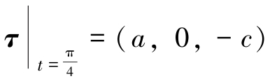， 时曲线上对应点坐标为，因此所求切线方程为
时曲线上对应点坐标为，因此所求切线方程为

法平面方程为，即
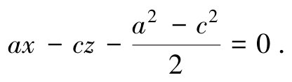
例3 在曲线 上求出一点，使此点的切线平行于平面x+2y+z－4=0.
上求出一点，使此点的切线平行于平面x+2y+z－4=0.
解 曲线的切向量为，已知平面的法向量为n=（1，2，1），由τ⊥n，即τ・n=1+4t+3t2=0，得 ，t2=－1，因此所求点为
，t2=－1，因此所求点为 和（－1，1，－1）.
和（－1，1，－1）.
2. 空间曲线 的切线和法平面
的切线和法平面
若空间曲线Γ是以两个柱面的交线的形式给出，比如 则可取x为参数，有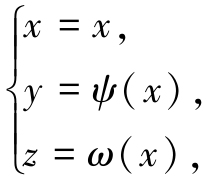其任一点处的切向量为τ=（1，ψ′（x），ω′（x））.
则可取x为参数，有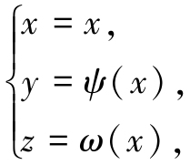其任一点处的切向量为τ=（1，ψ′（x），ω′（x））.
因此，空间曲线在点M0（x0，y0，z0）处的切线方程为

法平面方程为
（x－x0）+ψ′（x0）・（y－y0）+ω′（x0）・（z－z0）=0.
例4 求曲线在点M（1，2，4）处的切线及法平面方程.
解 τ=（1，6x2，1），τ|x=1=（1，6，1），
因此所求切线方程为

法平面方程为
（x－1）+6（y－2）+（z－4）=0，
即
x+6y+z－17=0.
3. 空间曲线的切线和法平面
若空间曲线Γ是以一般方程形式（两个曲面的交线）给出，这里与隐函数存在定理的条件一样，仍要求F、G在点M0（x0，y0，z0）处具有连续偏导数，且 ，因此由隐函数存在定理知，
，因此由隐函数存在定理知， 必在点M0的某个邻域内能唯一地确定具有连续导数的函数y=ψ（x）和z=ω（x）.
必在点M0的某个邻域内能唯一地确定具有连续导数的函数y=ψ（x）和z=ω（x）.
这样空间曲线Γ的表达式可认为是

切向量为τ=（1，ψ′（x），ω′（x））= .而可用下列方法获得.
.而可用下列方法获得.
由等式两边同时对x求导数，得

解方程组求得 的表达式：
的表达式：
从而τ′|x=x0=（1，ψ′（x0），ω′（x0））是曲线Γ在点M0（x0，y0，z0）处的一个切向量，这里
分子分母带下标M0的行列式表示行列式在点M0（x0，y0，z0）的值.
把上面的切向量乘以，得到的向量
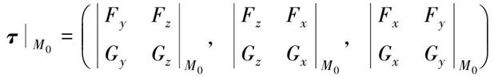
也是曲线Γ在点M0（x0，y0，z0）处的一个切向量.
继而得到对应曲线Γ在点M0（x0，y0，z0）处的切线方程为
法平面方程为
注1 由行列式的定义可知，借助于三阶行列式，我们可以把上述的切向量表示为
这样比较方便记忆.
注2 若 ，而
，而 中至少有一个不为零时，我们同样可得到结果.
中至少有一个不为零时，我们同样可得到结果.
比如， ≠0（其他条件不变），则可唯一确定x=x（z），y=y（z）.
≠0（其他条件不变），则可唯一确定x=x（z），y=y（z）.
例5 求曲线 在点（1，－2，1）处的切线及法平面方程.
在点（1，－2，1）处的切线及法平面方程.
解法一 设F（x，y，z）=x2+y2+z2－6，G（x，y，z）=x+y+z，则
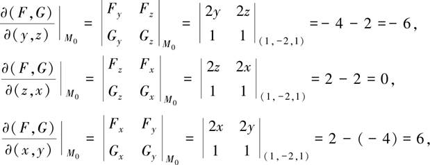
故切向量τ|（1，－2，1）=（1，0，－1），因此所求切线方程为

即
法平面方程为
1・（x－1）+0・（y+2）－1・（z－1）=0，
即
x－z=0.
解法二
因此可唯一确定y=y（x），z=z（x）．对方程组两端关于x求导，得
将点（1，－2，1）代入得
解得，因此所求切线方程为

法平面方程为
x－z=0.
例6 求曲线 在点（2，－1，1）处的切线及法平面方程.
在点（2，－1，1）处的切线及法平面方程.
解法一 设F（x，y，z）=x2+2y2+z2－7，G（x，y，z）=2x+5y－3z+4，
则在点（2，－1，1）处有
Fx=4，Fy=－4，Fz=2；Gx=2，Gy=5，Gz=－3.
故切向量，因此所求切线方程为

法平面方程为
（x－2）+8（y+1）+14（z－1）=0，
即
x+8y+14z－8=0.
解法二 我们也可以依照推导出切向量的表达式的方法来求解，为此视方程组中y=y（x），z=z（x），对方程组两端关于x求导，得

解得
故有，从而得到切向量τ|（2，－1，1）=（1，8，14），
因此所求切线方程为
法平面方程为
（x－2）+8（y+1）+14（z－1）=0，
即
x+8y+14z－8=0.
4. 一元向量值函数及其导数
由空间解析几何可知，空间曲线Γ的参数方程为
若记r=（x，y，z），f（t）=（φ（t），ψ（t），ω（t）），则曲线Γ的方程可写成向量的形式：
r=f（t），t∈［α，β］． （2）
定义1 设数集D⊂R，称之为一元向量值函数，一般地，有如下定义.我们称关系f：D→R3为一元向量值函数，记为r=f（t），t∈D．其中数集D称为函数的定义域，t称为自变量，r称为因变量.
在R3中，若向量函数f（t），t∈D的三个分量函数依次为f1（t），f2（t），f3（t），t∈D，则向量值函数f可表示为
f（t）=f1（t）i+f2（t）j+f3（t）k=（f1（t），f2（t），f3（t）），t∈D.
设向量r的起点取在坐标系的原点，终点在M处，即 ，终点M的轨迹（记为曲线Γ）称为向量值函数r=f（t），t∈D的图形．而r=f（t），t∈D就称为曲线Γ的向量方程.
，终点M的轨迹（记为曲线Γ）称为向量值函数r=f（t），t∈D的图形．而r=f（t），t∈D就称为曲线Γ的向量方程.
根据R3中向量的模的概念与向量的线性运算，可以定义一元向量值函数r=f（t）的连续性和可导性.
设向量值函数f（t）在点t0的某一邻域内有定义，如果，则称向量值函数f（t）在t0连续.
向量值函数f（t）在t0连续 f1（t）、f2（t）、f3（t）在t0连续.
f1（t）、f2（t）、f3（t）在t0连续.
设向量值函数f（t），t∈D，若D1⊂D，f（t）在D1上每一点处都连续，则称f（t）在D1上连续，或称f（t）为D1上的连续函数.
设向量值函数f（t）在点t0的某一邻域内有定义，如果
存在，则称此极限向量为向量值函数r=f（t）在t0处的导数或导向量，记作f′（t0）或.
设向量值函数r=f（t），t∈D，若D1⊂D，f（t）在D1上每一点处都存在导向量f′（t），则称f（t）在D1上可导.
向量值函数f（t）在t0可导 f1（t）、f2（t）、f3（t）在t0可导.
f1（t）、f2（t）、f3（t）在t0可导.
当f（t）在t处可导时，有
二、空间曲面的切平面与法线
设空间曲面Σ的方程为F（x，y，z）=0，其中F具有连续偏导数Fx、Fy、Fz且不同时为零．建立曲面Σ在点M0（x0，y0，z0）的切平面与法线方程.
在曲面Σ上点M0处可以引无数多条曲线，我们任意取其中过点M0的一条曲线Γ：
t∈［α，β］，t=t0对应的点为M0（x0，y0，z0），φ（t）、ψ（t）、ω（t）在［α，β］上可导，且不同时为零.
曲线Γ在点M0处的切向量为τ=（φ′（t0），ψ′（t0），ω′（t0）），
因为曲线Γ在曲面Σ上，所以
F（φ（t），ψ（t），ω（t））≡0，
由于F具有连续偏导数且φ′（t0）、ψ′（t0）、ω′（t0）存在，因此对上述恒等式在t=t0时有全导数=0，即Fx（x0，y0，z0）φ′（t0）+Fy（x0，y0，z0）ψ′（t0）+Fz（x0，y0，z0）ω′（t0）=0，
也可写成：
（Fx（M0），Fy（M0），Fz（M0））・（φ′（t0），ψ′（t0），ω′（t0））=0.
记 n|M0=（Fx（M0），Fy（M0），Fz（M0）），则有n・τ|t=t0=0，表明n（固定向量）与切线向量τ垂直．由于曲线Γ是Σ上过点M0的任意一条曲线，它们在点M0的切线都与同一向量n垂直，所以在曲面上通过点M0的一切曲线的切线都在同一平面上，这个平面称为曲面Σ上点M0处的切平面，它的法向量就是n（见图6-13）.
图6-13
根据平面点法式方程，可知该切平面方程为
Fx（x0，y0，z0）・（x－x0）+Fy（x0，y0，z0）・（y－y0）+Fz（x0，y0，z0）・（z－z0）=0，
而过点M0（x0，y0，z0）垂直于此点切平面的直线就称为曲面Σ上点M0处的法线，它的对称式（点向式）方程为
如果空间曲面Σ的方程为z=f（x，y），其中f具有连续偏导数，则取
F（x，y，z）=z－f（x，y）或F（x，y，z）=f（x，y）－z，
得曲面在点M0（x0，y0，z0）处的法线向量
n=（－fx，－fy，1）或n=（fx，fy，－1），于是点M0（x0，y0，z0）处的切平面方程为
fx（x0，y0）・（x－x0）+fy（x0，y0）・（y－y0）－（z－z0）=0，
法线方程为

例7 求曲面3x2+y2－z2=27在点M0（3，1，1）处的切平面及法线方程.
解 因为F（x，y，z）=3x2+y2－z2－27，故
Fx（3，1，1）=6x|（3，1，1）=18，Fy（3，1，1）=2y|（3，1，1）=2，
Fz（3，1，1）=－2z（3，1，1）=－2，
所以曲面3x2+y2－z2=27在点M0（3，1，1）处的切平面为
18（x－3）+2（y－1）－2（z－1）=0，
即
9x+y－z－27=0，
法线方程为

即
例8 求圆锥面 在点M0（1，0，1）处的切平面及法线方程.
在点M0（1，0，1）处的切平面及法线方程.
解 设，则
所以圆锥面在点M0（1，0，1）处的切平面为
1・（x－1）+0・（y－0）－1・（z－1）=0，
即
x－z=0；
法线方程为

即

例9 试求曲面x2+y2+z2－xy－3=0上垂直于直线的切平面方程.
解 设曲面上点（x，y，z）处的切平面垂直于已知直线，该点处的切平面的法向量为n=（2x－y，2y－x，2z），已知直线的方向向量为，由题意知n//s，即 ，又（x，y，z）满足曲面方程，故可解得x=±1，y=±1，z=0，即切点为（－1，1，0）及（1，－1，0），所求切平面方程为
，又（x，y，z）满足曲面方程，故可解得x=±1，y=±1，z=0，即切点为（－1，1，0）及（1，－1，0），所求切平面方程为
－（x+1）+（y－1）=0及－（x－1）+（y+1）=0，
即x－y+2=0及x－y－2=0.
例10 试证曲面（a>0）上任一点处的切平面在各坐标轴上的截距之和为a.
解 任取M0（x0，y0，z0）∈Σ，则在该点处的切平面的法向量为
M0点处的切平面方程为
即
即
截距之和为
例11 在椭球面上求一个截取各正半坐标轴为相等线段的切平面方程.
解 椭球面在点M0（x0，y0，z0）处的切平面方程为

由得
因此切平面方程为

三、多元函数的极值
在实际问题中，我们会大量遇到求多元函数的最大值、最小值的问题．与一元函数的情形类似，多元函数的最大值、最小值与极大值、极小值有密切的联系．下面我们以二元函数为例来讨论多元函数的极值问题.
1. 二元函数极值的概念
定义2 设函数z=f（x，y）在点（x0，y0）的某一邻域内有定义，对于该邻域内异于（x0，y0）的任意一点（x，y），如果
f（x，y）<f（x0，y0），
则称函数在（x0，y0）有极大值f（x0，y0）；如果
f（x，y）>f（x0，y0），
则称函数在（x0，y0）有极小值f（x0，y0）；极大值、极小值统称为极值，使函数取得极值的点称为极值点.
例12 函数z=2x2+3y2在点（0，0）处有极小值．从几何上看，z=2x2+3y2表示一开口向上的椭圆抛物面，点（0，0，0）是它的顶点（见图6-14）.

图6-14
例13 函数在点（0，0）处有极大值．从几何上看，表示一开口向下的半圆锥面，点（0，0，0）是它的顶点（见图6-15）.
图6-15
例14 函数z=x在点（0，0）处无极值．从几何上看，它表示过原点的平面（见图6-16）.

图6-16
二元函数的极值问题，一般可以用偏导数来解决．下面给出二元函数有极值的必要条件.
定理1（必要条件） 设函数z=f（x，y）在点（x0，y0）具有偏导数，且在点（x0，y0）处有极值，则它在该点的偏导数必然为零，即
fx（x0，y0）=0，fy（x0，y0）=0.
证 不妨设函数z=f（x，y）在点P0（x0，y0）取得极大值．由极值定义，对于点P0的某个邻域内异于P0的任意一点P（x，y），都有
f（x，y）<f（x0，y0）.
特别地，取y=y0，而x≠x0，也有f（x，y0）<f（x0，y0）.
这表明一元函数f（x，y0）在x=x0处取得极大值，由一元函数取得极值的必要条件可知
fx（x0，y0）=0.
类似地，我们可以得到
fy（x0，y0）=0.
与一元函数的情形类似，对于多元函数，凡是能使一阶偏导数同时为零的点称为函数的驻点.
从定理1可知，具有偏导数的函数的极值点必为函数的驻点．但函数的驻点不一定是极值点，例如函数z=xy，在点（0，0）处的两个偏导数为
所以点（0，0）是函数z=xy的驻点，而按定义直接可以判断出点（0，0）不是极值点.
怎样判定驻点是否为极值点呢？下面的定理给出了答案.
定理2（充分条件） 设函数z=f（x，y）在点（x0，y0）的某邻域内有直到二阶的连续偏导数，又fx（x0，y0）=0，fy（x0，y0）=0．令
fxx（x0，y0）=A，fxy（x0，y0）=B，fyy（x0，y0）=C.
（1）当AC－B2>0时，函数f（x，y）在（x0，y0）处有极值，且当A>0时有极小值f（x0，y0），A<0时有极大值f（x0，y0）；
（2）当AC－B2<0时，函数f（x，y）在（x0，y0）处没有极值；
（3）当AC－B2=0时，函数f（x，y）在（x0，y0）处可能有极值，也可能没有极值.
定理证明从略.
根据定理1与定理2，如果函数f（x，y）具有二阶连续偏导数，则求z=f（x，y）的极值的一般步骤如下.
第一步：解方程组fx（x，y）=0，fy（x，y）=0，求出f（x，y）的所有驻点.
第二步：求出函数f（x，y）的二阶偏导数，依次确定各驻点处A、B、C的值，并根据AC－B2的符号判定驻点是否为极值点．最后求出函数f（x，y）在极值点处的极值.
例15 求函数f（x，y）=（x－1）2+（y－4）2的极值.
解 先解方程组
解得驻点为（1，4）．因为
A=fxx（1，4）=2，B=fxy（1，4）=0，C=fyy（1，4）=2，
在点（1，4）处，AC－B2=4>0，又A>0，故函数在该点处有极小值f（1，4）=0.
例16 求函数f（x，y）=3xy－x3－y3的极值.
解 先解方程组

解得驻点为（0，0），（1，1）.
再求出二阶偏导数
fxx（x，y）=－6x，fxy（x，y）=3，fyy（x，y）=－6y.
在点（0，0）处，AC－B2=36xy－9|（0，0）=－9<0，所以，函数在该点处没有极值.
在点（1，1）处，AC－B2=27>0，又A=-6<0，故函数在该点处有极大值f（1，1）=1.
例17 求函数f（x，y）=x3－y3+3x2+3y2－9x的极值.
解 先解方程组
解得驻点为（1，0），（1，2），（－3，0），（－3，2）.
再求出二阶偏导数
fxx（x，y）=6x+6，fxy（x，y）=0，fyy（x，y）=－6y+6.
在点（1，0）处，AC－B2=12・6>0，又A>0，故函数在该点处有极小值f（1，0）=－5.
在点（1，2）和（－3，0）处，AC－B2=－12・6<0，故函数在这两点处没有极值.
在点（－3，2）处，AC－B2=－12・（－6）>0，又A<0，故函数在该点处有极大值f（－3，2）=31.
注 讨论函数的极值问题时，如果函数在所讨论的区域内具有偏导数，那么由定理1可知，极值只能在驻点处取得．然而，如果函数在个别点处的偏导数不存在，这些点当然不是驻点，但可能是极值点．例如在例13中，函数在点（0，0）处的偏导数不存在，但在该点处具有极大值．因此，在考虑函数的极值问题时，除了考虑函数的驻点外，如果有偏导数不存在的点，那么对这些点也应当考虑.
2. 二元函数的最大值与最小值
在本章第一节已指出，如果函数z=f（x，y）在闭区域上连续，那么它在闭区域上一定有最大值和最小值．函数最大值和最小值的求法，与一元函数的解法类似，可以利用函数的极值来求．求函数f（x，y）的最大值和最小值的一般步骤如下.
（1）求函数f（x，y）在D内所有驻点处的函数值.
（2）求f（x，y）在D的边界上的最大值和最小值.
（3）将前两步得到的所有函数值进行比较，其中最大者即为最大值，最小者即为最小值.
例18 求函数f（x，y）=x2－2xy+2y在矩形域
D={（x，y）|0≤x≤3，0≤y≤2}
上的最大值和最小值.
解 先求函数f（x，y）在D内的驻点．由fx=2x－2y=0，fy=－2x+2=0求得f在D内部的唯一驻点（1，1），且f（1，1）=1．其次求函数f（x，y）在D的边界上的最大值和最小值.
图6-17
如图6-17所示，区域D的边界包含四条直线段L1、L2、L3、L4.
在L1上y=0，f（x，0）=x2，0≤x≤3．这是x的单调增加函数，故在L1上f的最大值为f（3，0）=9，最小值为f（0，0）=0.
同样，在L2和L4上f也是单调的一元函数，易得最大值、最小值分别为
f（3，0）=9，f（3，2）=1（在L2上）；
f（0，2）=4，f（0，0）=0（在L4上）.
而在L3上y=2，f（x，2）=x2－4x+4，0≤x≤3，易求出f在L3上的最大值f（0，2）=4，最小值f（2，2）=0.
将f在驻点上的值f（1，1）与L1、L2、L3、L4上的最大值和最小值比较，最后得到f在D上的最大值f（3，0）=9，最小值f（0，0）=f（2，2）=0.
在通常遇到的实际问题中，如果根据问题的性质，可以判断出函数f（x，y）的最大值（最小值）一定在D的内部取得，而函数f（x，y）在D内只有一个驻点，则可以肯定该驻点处的函数值就是函数f（x，y）在D上的最大值（最小值）.
例19 某厂要用铁板做成一个体积为2m3的有盖长方体水箱．问当长、宽、高各取怎样的尺寸时，才能使用料最省.
解 设水箱的长为xm，宽为ym，则其高应为 ．此水箱所用材料的面积为
．此水箱所用材料的面积为
此为目标函数．下面求使这函数取得最小值的点（x，y）.
令
解这方程组，得唯一的驻点 .
.
根据题意可断定，该驻点即为所求最小值点.
因此，当水箱的长为、宽为、高为 时，水箱所用的材料最省.
时，水箱所用的材料最省.
注 体积一定的长方体中，以立方体的表面积为最小.
3. 条件极值与拉格朗日乘数法
前面所讨论的极值问题，对于函数的自变量一般只要求落在定义域内，并无其他限制条件，这类极值我们称为无条件极值．但在实际问题中，常会遇到对函数的自变量还有附加条件的极值问题．对自变量有附加条件的极值称为条件极值．下面介绍一种直接求条件极值的方法――拉格朗日乘数法.
设二元函数f（x，y）和φ（x，y）在区域D内有一阶连续偏导数，则求z=f（x，y）在D内满足条件φ（x，y）=0的极值问题，可以转化为求拉格朗日函数
L（x，y，λ）=f（x，y）+λφ（x，y）
（其中λ为某一常数）的无条件极值问题.
设点P0（x0，y0）是函数z=f（x，y）在条件φ（x，y）=0下的极值点，即函数z=f（x，y）在P0处有极值，且φ（x0，y0）=0，我们现在讨论取得极值的必要条件.
设函数f（x，y）和φ（x，y）在点P0处具有连续的偏导数，且φy（x0，y0）≠0，再设y=g（x）是由方程φ（x，y）=0所确定的隐函数，则有y0=g（x0）．将它代入方程z=f（x，y）中，得
z=f［x，g（x）］.
由点P0（x0，y0）是函数z=f（x，y）的极值点可知，点x=x0是一元函数z=f［x，g（x）］的极值点．于是，根据一元函数极值的必要条件，有
又由隐函数求导公式，知
所以，函数z=f（x，y）在条件φ（x，y）=0下，在P0（x0，y0）处有极值的必要条件为
引入比例系数 （λ称为拉格朗日乘子），那么，上述必要条件又可写成
（λ称为拉格朗日乘子），那么，上述必要条件又可写成
上式左端恰好是拉格朗日函数分别对x、y、λ的偏导数.
于是，求函数z=f（x，y）在条件φ（x，y）=0下的极值的拉格朗日乘数法的基本步骤如下.
（1）构造拉格朗日函数
L（x，y，λ）=f（x，y）+λφ（x，y），
其中λ为某一常数.
（2）由方程组
解出x、y，（x，y）就是所求条件极值的可能的极值点.
注 拉格朗日乘数法只给出函数取极值的必要条件，因此按照这种方法求出来的点是否为极值点，还需要加以讨论．不过在实际问题中，往往可以根据问题本身的性质来判定所求的点是不是极值点.
拉格朗日乘数法可推广到自变量多于两个而条件多于一个的情形.
例20 求表面积为a2而体积为最大的长方体的体积.
解 设长方体的三边长为x、y、z，则问题就是在条件
φ（x，y，z）=2xy+2yz+2xz－a2=0 （1）
下，求函数V=xyz（x>0，y>0，z>0）的最大值.
作拉格朗日函数
解得
即
x=y=z.
代入式（1），得唯一可能的极值点： .
.
由问题本身意义知，此点就是所求最大值点．即表面积为a2的长方体中，以棱长为 的正方体的体积为最大，最大体积
的正方体的体积为最大，最大体积 .
.
习题6-4
1. 填空题.
（1）曲线x=cost，y=sint，z=sint+cost在对应的点t=0处的切线与平面x+By－z=0平行，则B=______；
（2）曲面z=x2+y2在点（1，1，2）处的法线与平面Ax+By+z+1=0垂直，则A=，B=.
2. 求下列曲线在指定点处的切线及法平面方程.
（1）x=t，y=t2， 在点
在点 处；
处；
（2）在对应点t=1处；
（3） 在点（1，0，1）处；
在点（1，0，1）处；
（4）x=t－sint，y=1－cost， 在点
在点 处；
处；
（5）x=2sin2t，y=3sintcost，z=cos2t在对应点 处；
处；
（6） 在点M（0，0，1）处；
在点M（0，0，1）处；
（7）在点M（1，1，1）处；
（8）在点M（1，1，1）处.
3. 求曲线与平面x+2y+z－4=0平行的切线方程.
4. 求下列曲面在指定点处的切平面及法线方程.
（1）ez－z+xy=3，M（2，1，0）；
（2）z=x2+y2，M（2，1，5）；
（3）；
（4） ，M0（1，1，1）.
，M0（1，1，1）.
5. 求抛物面z=x2+y2的切平面，使该切平面平行于平面x－y+2z=0.
6. 试求曲面x2+y2+z2－xy－3=0上垂直于直线 的切平面方程.
的切平面方程.
7. 求空间曲线在点（1，1，－1）处的切线方程.
8. 求空间曲线 在点（1，1，2）处的切线方程.
在点（1，1，2）处的切线方程.
9. 证明螺旋线x=acost，y=asint，z=bt上任一点处的切线都与z轴形成定角.
10. 证明曲线与锥面x2+y2=z2的母线相交成一定角.
11. 设函数f（u，v）具有不同时为零的一阶连续偏导数.
（1）写出曲面Σ：f（ax－bz，ay－cz）=0（其中a2+b2+c2≠0）上任一点处的切平面方程；
（2）证明该曲面上任一点的法线向量都与某确定的向量正交（垂直）并写出该向量.
12. 证明曲面 上任一点处的切平面都过原点，其中z具有连续导数.
上任一点处的切平面都过原点，其中z具有连续导数.
13. 证明曲面xyz=a3（a>0）上任一点处的切平面与坐标面围成的四面体的体积为定值.
14. 设曲面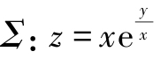，点M（x，y，z）∈Σ，试证曲面Σ在点M处的法线垂直于直线OM（其中O为坐标原点）.
15. 求下列函数的极值.
（1）f（x，y）=x3－4x2+2xy－y2+3；
（2）f（x，y）=3xy－x3－y3；
（3）f（x，y）=e2x（x+y2+2y）；
（4）f（x，y）=（6x－x2）（4y－y2）；
（5）f（x，y）=4（x－y）－x2－y2；
（6）；
（7）f（x，y）=ex－y（x2－2y2）；
（8）f（x，y）=x3+y3－3（x2+y2）.
16. 要制造一个容积为4m3的无盖水箱，问它的长宽高应各取什么样的尺寸时，才能使所用材料最省？
17. 求椭圆x2+3y2=12的内接等腰三角形（三角形底边平行于椭圆长轴）的最大面积.
18. 求旋转抛物面z=x2+y2与平面x+y－z=1之间的最短距离.
19. 在xOy面上求一点，使它到直线x=0．直线y=0和直线x+2y－16=0的距离的平方和最小.
20. 把正数a分成三个正数之和，使它们的乘积为最大，求这三个正数.
21. 求内接于半径为R的球且有最大体积的长方体.
22. 在椭球面上求一点，使其三个坐标的乘积最大.
23. 证明函数z=（1+ey）cosx－yey有无穷多个极大值而无一极小值.
24. 求二元函数z=f（x，y）=x2y（4－x－y）在直线x+y=6，x轴和y轴所围成的闭区域D上的最大值与最小值.
25. 求函数f（x，y）=3x2+3y2－x3在区域D：x2+y2≤16上的最小值.
26. 求两直线之间的最短距离.
27. 证明不等式
其中a、b、c是任意的非负实数.
本章小结

本章小结
章节测试六
一、填空题.
1. 极限=______.
2. 函数u=f（x，y，z）在点（x0，y0，z0）沿任意方向的方向导数存在是该函数在该点可微分的______条件；函数f（x，y）在点（x0，y0）可导是在该点连续的______条件；可导函数f（x，y）在某点满足fx（x，y）=fy（x，y）=0是函数在该点取得极值的______条件.
3. 已知函数，则f（x，y）=______.
4. 设z=ln（x－y）+tant，x=2t2，y=2t，则=______.
.
5. f（x，y）具有二阶连续偏导数，该函数在点（x0，y0）取得极值的必要条件是______；在驻点（x0，y0）处取得极大值的充分条件是______.
6. 曲线x=2t2，y=et2－1，z=lnt在t=1所对应点的切线方程为______；在该点的法平面方程为______.
二、计算题.
1. 设z=arcsinxy，求 .
.
2. 求方程 所确定的函数z=z（x，y）在（1，0，－1）处的偏导数.
所确定的函数z=z（x，y）在（1，0，－1）处的偏导数.
3. 函数z=f（x，y）在点（1，1）处可微，且f（1，1）=1， ，φ（x）=f（x，f（x，x）），求
，φ（x）=f（x，f（x，x）），求 .
.
4. 函数z=z（x，y）由方程xz=siny+f（xy，z+y）确定，其中函数f可微，求 .
.
5. 求函数f（x，y，z）=x3－xy2－cosz在点（1，1，0）沿l=（2，－3，6）方向的方向导数．说明函数在该点沿哪个方向的方向导数最大，并求出该最大的方向导数.
6. 设w=x+y，其中x、y是由确定的u、v的函数，求.
三、求曲面平行于平面2x+2y－z=0的切平面方程.
四、求曲线xyz=6，xy+yz+zx=11于点（1，2，3）的切线方程.
五、设n是曲面2x2+3y2+z2=6在点P（1，1，1）处指向外侧的法向量，求函数在该点沿n的方向导数.
六、求z=x2+y2+5在约束条件y=1－x下的极值，并说明是极小值还是极大值.
七、在椭球面 内作内接直角平行六面体，求其最大体积.
内作内接直角平行六面体，求其最大体积.
拓展阅读
十二部数学电影
1. 死亡密码
英文名称：π
别名：3.14159265358
发行时间：1998年
采用科幻惊悚手法描写了一名天才数学家触目惊心的经历．才华盖世的数学家马斯在过去十年来，发现股票市场在混乱波动背后原来由一套数学模式操控，于是致力研究寻出该数学模式．没想到，主宰金融市场的一家华尔街财团，以及不择手段要破解圣经密码的一个卡巴拉宗教组织均同时派员追缉他，马斯既要保护一己安全，同时亦要尽快找出这些影响世界金融市场的密码.
2. 美丽心灵
英文名称：A Beautiful Mind
发行时间：2001年
故事的原型是数学家小约翰・福布斯・纳什（Jr．John Forbes Nash）．英俊而又十分古怪的纳什早年就做出了惊人的数学发现，开始享有国际声誉．但纳什出众的直觉受到了精神分裂症的困扰，使他向学术上最高层次进军的辉煌历程发生了巨大改变．面对这个曾经击毁了许多人的挑战，纳什在深爱着的妻子艾丽西亚（Alicia）的相助下，毫不畏惧，顽强抗争．经过了几十年的艰难努力，他终于战胜了这个不幸，并于1994年获得诺贝尔经济学奖.
3. 心灵捕手
英文名称：Good Will Hunting
发行时间：1997年
一个麻省理工学院的数学教授，在数学系的公布栏写下一道他觉得十分困难的题目，希望他那些杰出的学生能解开答案，可是却无人能解．结果一个年轻的清洁工却在下课打扫时，发现并轻易地解开了这道数学题.
4. 费马大定理
英文名称：Fermat's Last Theorem
发行时间：2005年
本片从证明了费马大定理的安德鲁・怀尔斯（Andrew Wiles）开始谈起，描述了费马大定理的历史始末.
5. 笛卡儿
英文名称：Descartes
发行时间：2006年
勒奈・笛卡儿（René Descartes，1596―1650年），法国哲学家、数学家、物理学家．他对现代数学的发展做出了重要的贡献，因将几何坐标体系公式化而被认为是解析几何之父．他还是西方现代哲学思想的奠基人，是近代唯物论的开拓者，提出了“普遍怀疑”的主张．他的哲学思想深深影响了之后的几代欧洲人，开拓了所谓“欧陆理性主义”哲学.
6. 牛顿探索
英文名称：Newton's Dark Secrets
发行时间：2005年
1643年1月4日，在英格兰林肯郡小镇沃尔索浦的一个自耕农家庭里，牛顿诞生了．牛顿是一个早产儿，出生时只有3磅（约1.36kg）重，接生婆和他的亲人都担心他活不下来．谁也没有料到，这个看起来微不足道的小婴儿会成为一位震古烁今的科学巨人，并且竟活到了85岁的高龄.
7. 博士热爱的算式
英文名称：Hakase No Aishita Sushiki
发行时间：2006年
一次交通意外，令天才数学博士只剩下80分钟的记忆，时间一到，所有回忆自动归零，重新开始．遇上语塞的时候，他总会以数字代替语言，以独特的风格和别人交流．他身上到处都是夹子夹着的纸条，以填补那只有80分钟的记忆．这次，新来的管家杏子带着10岁的儿子照顾博士的起居，对杏子来说，每天也是和博士的新开始．博士十分喜爱杏子的儿子，并称呼他作“根号”，因为根号能容纳所有人和事，他让母子俩认识数学算式内美丽且光辉的世界．因为只有短短80分钟，三人相处的每一刻都显得非常珍贵.
8. 阿基米德的秘密
英文名称：Infinite Secrets：The Genius of Archimedes
发行时间：2005年
阿基米德（Archimedes，约公元前287―212年）是古希腊物理学家、数学家，静力学和流体静力学的奠基人．像伟大的牛顿和爱因斯坦一样，阿基米德也为人类的进步做出过巨大的贡献．即使牛顿和爱因斯坦也都曾从他身上汲取过智慧和灵感．他是“理论天才与实验天才合于一人的理想化身”，文艺复兴时期的达・芬奇和伽利略等人都拿他来做自己的楷模.
9. 伽利略：为真理而战
英文名称：Galileo's Battle For The Heavens
发行时间：2006年
本片基于达娃・索贝尔（Dava Sobel）的畅销传记《伽利略的女儿：科学、信仰和爱的历史回忆》改编而成，向我们展示了伟大科学家伽利略的人生轨迹和追求真理的道路.
10. 阿兰・图灵
英文名称：Alan Turing
发行时间：2005年
阿兰・图灵（Alan Turing）这个名字无论是在计算机领域、数学领域、人工智能领域，还是哲学、逻辑学等领域，都可谓“掷地有声”．图灵是计算机逻辑的奠基者，许多人工智能的重要方法也源自这位伟大的科学家．他在24岁时提出了图灵机理论，31岁参与了Colossus（二战时，英国破解德国通信密码的计算机）的研制，33岁时构思了仿真系统，35岁提出自动程序设计概念，38岁设计了“图灵测试”，在后来还创造了一门新学科――非线性力学．虽然图灵去世时只有42岁，但在其短暂而离奇的生涯中的那些科技成就，已让后人享用不尽．人们仰望着这位伟大的英国科学家，把“计算机之父”“人工智能之父”“破译之父”等头衔都加冕在了他身上，甚至认为，他在技术上的贡献及对未来世界的影响几乎可与牛顿、爱因斯坦等巨人比肩.
11. 牛津杀手
英文名称：The Oxford Murders
发行时间：2008年
本片讲述远渡重洋来到牛津大学数学系深造的阿根廷留学生，刚到牛津不久即卷入一宗谋杀案．一个夏日午后，他的房东老太太在家中被杀．与他同时赶到现场的是牛津大学数理逻辑学泰斗阿瑟・塞尔登教授，因为有人在他的信箱里塞了一张纸条，上面画着一个圆圈，并写着：“序列的第一个．”接二连三的人被不露痕迹地杀害，每次案发前后，塞尔登教授周围总是出现一个奇怪的符号．种种迹象表明，凶手是在通过杀人，向塞尔登教授发起数理逻辑的挑战……一场精采的斗智由此展开.
12. 维度：数学漫步
英文名称：Dimensions：A Walk Through Mathematics
发行时间：2008年
本片是两小时时长的科普电影，讲述了许多深奥的数学知识，如四维空间中的正多胞体、复数、分形、纤维化理论等.
• 目录
• 首页
• 设置
上下翻页
左右翻页